End-to-End Workspace Exercise
End-to-End Workspace Exercise
Workspace Concept Review
In the previous chapters, we explored the core concepts of Workspaces in OneStream, including their key properties, the types of objects they contain, and how Assemblies can be used to run custom code in place of traditional business rules.
In this chapter, we’ll bring all those elements together through a step-by-step exercise. You’ll learn how to use Workspaces in a practical, hands-on way to maximize the value of your OneStream application.
Whether you’re just getting started and want to enhance your existing application, or you’re a more experienced developer seeking a flexible environment to build and deploy custom solutions, this chapter will serve as a complete guide. You’ll gain a deeper understanding of how to build, manage, and expand your solutions using Workspaces in OneStream.
End-to-End Workspace Exercise
Workspace Overview
Before we dive into the exercise, let’s review a fully configured and packaged Workspace dashboard solution to reiterate how Workspaces enhance your OneStream development experience and give you the tools to easily and quickly share solutions, collaborate, and accelerate QA times – ultimately helping make your application more efficient and realizing the benefits in an expedient way.
In this exercise, we will walk through setting up a Workspace with two maintenance units to demonstrate how development can be collaborative yet securitized by developers to limit who can modify dashboards and the content within them.
If you want to follow along with this chapter’s exercise, make sure you have access to the
Application tab, and the Workspaces page under the Presentation section.
Navigate to the Application tab and select Workspaces under the Presentation section.
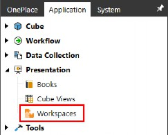
Figure 10.1
End-to-End Workspace Exercise › Workspace Overview
Create Workspace
In Chapter 3, we showed a step-by-step example of how to set up a new Workspace, and we will use this Workspace to build maintenance units with Assemblies, Cube Views, and data management groups, all of which can be packaged and exported for simplified solution sharing.
You may notice that we’ve changed the maintenance group on this Workspace from DeveloperGroup1 to DevelopmentQA. This change will allow us to show multiple developers working on solutions within the same Workspace, while restricting them to only having the rights to modify their respective maintenance units. We’ll show how you can apply the same security settings to maintenance units as Workspaces that we demonstrated in Chapter 2.
Also, notice that we’ve entered Formulation.ServiceFactory into the Workspace Assembly Service property. We’ve made this change to show how to appropriately call Assemblies from a specific Workspace and a Workspace maintenance unit. The Workspace Assembly Service is the name of the Assembly that contains a library of syntax files to be called from a specified action; the standard syntax for this property is MyVBWsAssemblyName.WsAssemblyService. Type Formulation.ServiceFactory into the field; we’ll set up the Assembly later in this chapter.
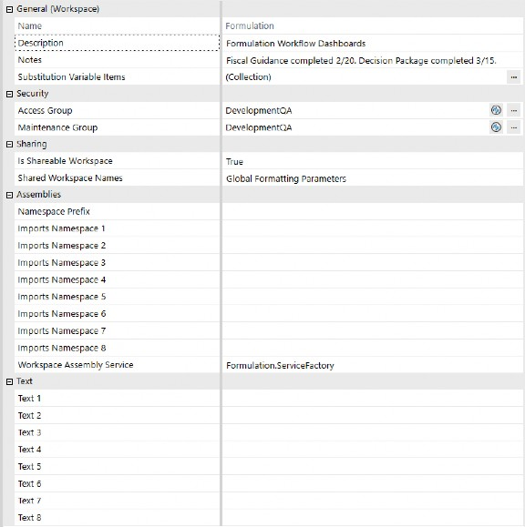
Figure 10.2
End-to-End Workspace Exercise › Workspace Overview
Solution #1 – Decision Packages
The first solution that we will build completely within Workspaces, including the creation of Workspace Assemblies, is called Decision Packages. This dashboard is robust, with data entry fields, rich-text narrative collection, advanced charts, and buttons that process Workspace Assembly logic, open fully formatted report books, and even send report books to email recipients.
Below is the final product that we are aiming to build. In this section, we will show how to build some of the components in this dashboard.
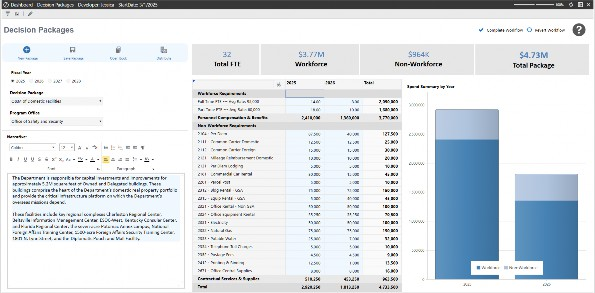
Figure 10.3
End-to-End Workspace Exercise › Workspace Overview › Solution #1 – Decision Packages
Create Maintenance Unit
End-to-End Workspace Exercise › Workspace Overview › Solution #1 – Decision Packages › Create Maintenance Unit
Objective Review
To show how developers can collaborate within Workspaces, we’ll create two maintenance units that multiple developers have access to, but each developer can only create and modify their respective maintenance unit’s objects.
This dashboard will be added as a step in our Planning workflow to enter new budget requests for approval submission. We need to allow our users to create new requests, or “decision packages” that explain the amount being requested, the justification for the request, and how the funds will be allocated if approved.
Our FP&A team has provided the following requirements for the solution:
Data Entry Form: Enter headcount and expense category amounts
Narrative Collection: Enter justification narrative and comments
Development will require Workspace Assemblies to write calculations, execute report publishing, and email the report package.
End-to-End Workspace Exercise › Workspace Overview › Solution #1 – Decision Packages › Create Maintenance Unit
Exercise
Click on Maintenance Units under the Formulation Workspace and click the Create Maintenance Unit button.
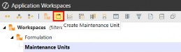
Figure 10.4
In the name field of the maintenance unit, type Decision Packages; you can also enter a description, which is optional.
Since we know that Assemblies will be used in this solution, we can proactively set up the Service Factory Assembly framework and add it to the maintenance unit to save time later. In the Workspace Assembly Service field, type DecisionPackage.ServiceFactory. After we’ve saved the maintenance unit, we’ll create the Workspace Assembly using this naming convention.
Jessica is our developer for this solution; she belongs to both the DevelopmentQA and DeveloperGroup2 security groups, which are the groups we will assign to this maintenance unit. Click the Save button to create the new maintenance unit.
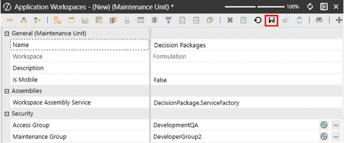
Figure 10.5
End-to-End Workspace Exercise › Workspace Overview › Solution #1 – Decision Packages
Create Cube Views
End-to-End Workspace Exercise › Workspace Overview › Solution #1 – Decision Packages › Create Cube Views
Objective Review
If you’ve been in the OneStream ecosystem since before the concept of Workspaces existed, you probably think Cube Views can only be created from the Cube Views page – that’s no longer true.
Since version 8, OneStream introduced an enhanced framework featuring Workspace capabilities, offering a new approach to organizing Cube Views within maintenance units and, more significantly, within Workspaces. The inception of Workspace-specific Cube View groups has provided a whole new way of creating solutions without having ever to leave the Workspaces page, not to mention no longer worrying about naming conflicts that required the use of modified Cube View names.
Cube Views can be created from the Cube Views page or from the Workspaces page within Maintenance Units. Cube Views within the Cube View page will also display on the Workspaces page, as shown below.
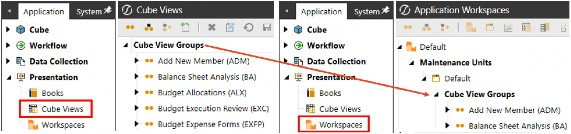
Figure 10.6
End-to-End Workspace Exercise › Workspace Overview › Solution #1 – Decision Packages › Create Cube Views
Exercise
For this exercise, the Workspace we’re building is for a unique business purpose that includes Cube Views for data entry and publishing report books. Because they will not be globally used in our application, and we want to package the Workspace as a solution to be shared, we will create Cube Views within the maintenance unit of our new Workspace.
Click on Cube View Groups under the Decision Packages maintenance unit and click the
Create Group button.
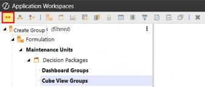
Figure 10.7
Type Decision Packages into the name field. You can enter additional text into the description field for context, but this field is optional.
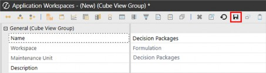
Figure 10.8
You are not limited to one Cube View group, so feel free to create as many groups as you need to help organize Cube Views within the maintenance unit. Something to keep in mind is that Cube Views are only exposed in the application when they are added to Cube View Profiles. This is meaningful for designing groups since you may have many Cube Views within a group but only want to expose certain Cube Views from a Cube View Profile.
In this scenario, I typically create two Cube View groups – one group for development/dashboard use, and another group for Cube Views that I want to make accessible from a Cube View Profile. Once you create a Cube View Profile, you can assign the Cube View group to add to the profile.
Click on the Cube View group and then click Create Cube View.
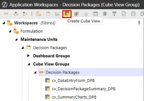
Figure 10.9
The Cube Views required for this dashboard have been created and are shown in the figure above. These will not be exposed in OnePlace or workflows, so there is no need to create a Cube View Profile to add them to for users to access.
End-to-End Workspace Exercise › Workspace Overview › Solution #1 – Decision Packages
Copying Existing Cube Views
If your application has existing Cube Views that you want to use as a starting point rather than building Cube Views from scratch, OneStream allows you to copy and paste Cube Views from one maintenance unit to another. This is something I do quite often to accelerate development by leveraging Cube Views as templates that I can quickly modify to meet design requirements.
To copy existing Cube Views to a new Workspace or maintenance unit, follow these steps:
Open the
DefaultWorkspace.Expand the
DefaultMaintenance Unit.Expand the
Cube View Groups.Select the Cube View (or Cube Views), right-click, and select Copy.
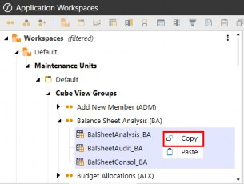
Figure 10.10
Select the Cube View group where you want to paste the Cube Views, right-click, and then select Paste. This will duplicate the Cube Views copied from the Default and append the Cube View names with _Copy. The duplicated Cube Views can be renamed, modified as needed, and used in the target maintenance unit’s dashboard objects.
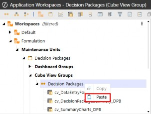
Figure 10.11
| Note: Cube Views in different Workspaces can use the same Cube View name; however, Cube View names cannot be reused within the same Workspace, even if they are in different maintenance units. |
End-to-End Workspace Exercise › Workspace Overview › Solution #1 – Decision Packages
Create Data Management Groups
End-to-End Workspace Exercise › Workspace Overview › Solution #1 – Decision Packages › Create Data Management Groups
Objective Review
Data management groups within the Data Management page will also display on the Workspaces page, as shown below. Data management groups, like Cube Views, that are not built into specific Workspaces are displayed under the Default maintenance unit of the Default Workspace.
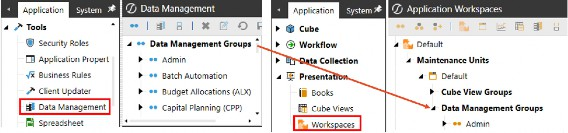
Figure 10.12
End-to-End Workspace Exercise › Workspace Overview › Solution #1 – Decision Packages
Copying Existing Data Management Objects
If your application has existing data management objects that you want to use as a starting point, rather than building the steps and sequences from scratch, OneStream allows you to copy and paste data management objects from one maintenance unit to another.
Copying data management objects is slightly different to copying Cube Views. The most notable feature is that copying a sequence will also copy the steps associated with the sequence. Another key difference is that when you copy a sequence to a different Workspace, the object names are not appended with _Copy when pasted. However, copying within the same Workspace to different maintenance units will append the name with _Copy.
To copy data management objects to a new Workspace or maintenance unit, follow these steps:
Open the
DefaultWorkspace.Expand the
DefaultMaintenance Unit.Expand the
Data Management Groups.Select the sequence, right-click, and select Copy.
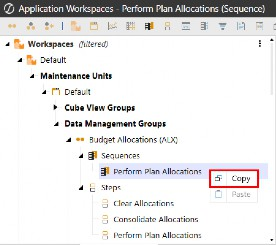
Figure 10.13
Select the data management group where you want to paste the sequence and right-click, then select Paste. This will duplicate the data management sequence and the steps associated with the selected sequence copied from the Default into the target maintenance unit. The duplicated Cube Views can be renamed, modified as needed, and used in the target maintenance unit’s dashboard objects.
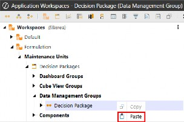
Figure 10.14
Below is a brief refresher on data management groups and their respective objectives:
Groups: Where we create and organize data management objects.
Step: What action needs to be executed.
Sequence: How we apply the action to a component.
| Note: For information on what data management objects are, and how they work, go back to Chapter 4 for an overview of how these objects are structured and an explanation of how they work together. |
End-to-End Workspace Exercise › Workspace Overview › Solution #1 – Decision Packages › Copying Existing Data Management Objects
Exercise
For this exercise, we will create a data management step to consolidate data, and a data management sequence that we will attach the step to, and reference in our Assembly to execute the applicable steps.
Click on Data Management Groups under the Decision Packages maintenance unit and click the Create Group button.
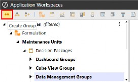
Figure 10.15
Type Decision Packages into the name field. You can enter additional text into the description field for context, but this field is optional.
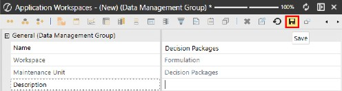
Figure 10.16
Click on Steps under the newly created group and then click the Create Step button.
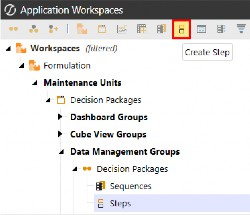
Figure 10.17
Select Calculate from the Create Step dialog box, then click OK.
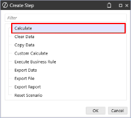
Figure 10.18
This step will be configured to consolidate data for the defined Scenario and Time at the parent entity.
Name: Consolidate Packages
Description (optional): Leave this blank or add your own description
Calculation Type: Select Consolidate from the Calculation Type drop-down menu
Data Units: Define the target intersection to run the consolidation The result should look like the figure below; click Save to create the step.
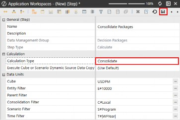
Figure 10.19
Next, we need to create a sequence to which we will add the step; this sequence will be referenced in our Assembly to execute when a button is clicked.
Click on Sequences and then click the Create Sequence button.
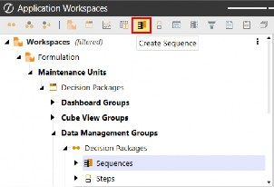
Figure 10.20
Type in a name for the sequence; you can also enter a description, which is optional. We named our Sequence Consolidate Decision Packages; this name will be referenced in our Assembly.
A recent enhancement to the OneStream framework is the ability to enable email notifications configured from the UI, as shown below.
| Important: An email connection must be configured in your server configuration to enable notifications. Contact your administrator if the Notification Connection drop-down menu is blank. |
Notifications can be sent to specific users or security groups; click Edit on the Notification Users and Groups property to select the desired user or group. Notifications are event-based; select the Notification Event Type drop-down menu to choose one of the available options: 1. On Success, 2. On Failure, 3. On Success or Failure.
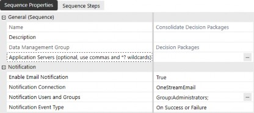
Figure 10.21
Select the Sequence Steps tab and click the ➕ button to add the Consolidate Packages step to the sequence. Click Save to create the sequence.
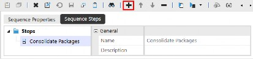
Figure 10.22
End-to-End Workspace Exercise › Workspace Overview › Solution #1 – Decision Packages
Create Assemblies
End-to-End Workspace Exercise › Workspace Overview › Solution #1 – Decision Packages › Create Assemblies
Objective Review
Assemblies are another method for executing actions and processing code. OneStream’s Workspaces provide an alternative entry point for developing code without leaving the Workspaces page. You now have the ability to use Assemblies where business rules were called – making it much easier and quicker to share/export complete dashboard solutions with syntax from the Assemblies packaged.
End-to-End Workspace Exercise › Workspace Overview › Solution #1 – Decision Packages › Create Assemblies
Exercise
Click Assemblies under the Decision Packages maintenance unit and click Create Assembly.
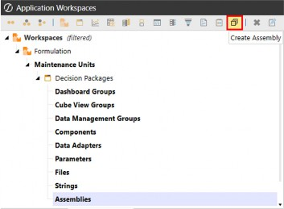
Figure 10.23
Type DecisionPackage into the Assembly Name. Remember that the name in the maintenance unit’s Workspace Assembly Service property must match the Assembly name. Type Decision Package Rules & Calculations into the description; this field is optional.
Select the Compiler Language drop-down menu to view the languages available and select your preferred language. OneStream’s development framework is currently compatible with two languages: Visual Basic (VB) and C#. The files created within the Assembly will be configured in the defined selection, depending on the compiler language selected.
Developers are free to choose their preferred language throughout the application – this is especially useful when you have different developers with different preferences. It is recommended to coordinate among your team, however, as a consistent language will help collaboration.
We selected Visual Basic since that’s my preferred language. Click Save to create the Assembly.
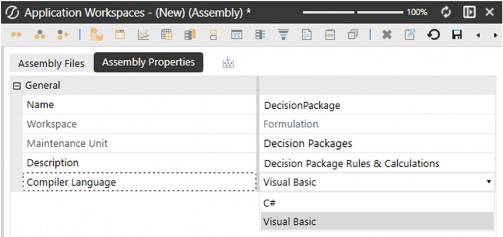
Figure 10.24
End-to-End Workspace Exercise › Workspace Overview › Solution #1 – Decision Packages
Changing Compiler Languages
Once the Assembly is saved, you will not be able to change the language. However, you can create a new Assembly and select the language you prefer.
For example, if you create the DecisionPackage Assembly using the Visual Basic language but then decide you want to develop in C#, you can create a new Assembly and name it DecisionPackageCS. In this scenario, you would simply modify the maintenance unit’s Workspace Assembly Service property to reflect the new Assembly name: DecisionPackageCS.ServiceFactory.
End-to-End Workspace Exercise › Workspace Overview › Solution #1 – Decision Packages
Adding Files to the Assembly
The last part of the DecisionPackage.ServiceFactory syntax is what we will name the Assembly file. To create the file, click on the Assembly Files tab and right-click on Files, then select Add File.
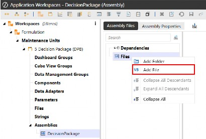
Figure 10.25
Type ServiceFactory into the File Name; remember that this must match the maintenance unit’s Workspace Assembly Service property, as it is the entry point for processing code from the Service Factory. Click the Source Code Type drop-down menu and select Service Factory, then click OK.
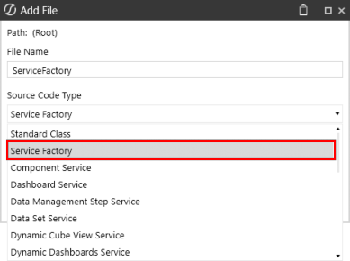
Figure 10.26
The Service Factory will produce a list of service types you can use as a directory for creating and linking new services. For this exercise, we’ve kept only the services that we’ll use for this solution in order to reduce the clutter and focus on the services we are actually using.
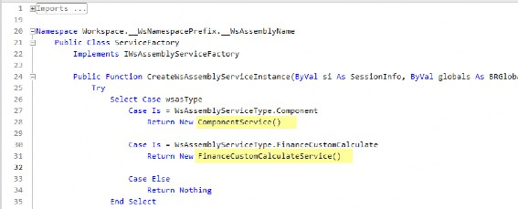
Figure 10.27
Staying with the theme of keeping our example neat and organized, we’ve created a folder to store the service files we will use. Click on Files, right-click, and select Add Folder.
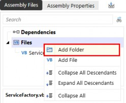
Figure 10.28 Type Services into the Folder Name, then click Save.
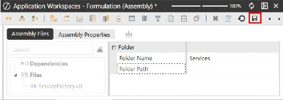
Figure 10.29
| Note: Folders are a great tool to organize code, especially if you are building an advanced solution that will require many different files. It is recommended to agree standards on how to organize files in your team to improve maintainability over time. As an example, the root can be split between factory files (Service Factory and all service files), page-specific files (code that is used to build or to be executed in the context of a specific dashboard), and shared files (code that can be reused and in which any change might impact any part of the solution). |
Now, we’ll create the service files used in our solution:
FinanceCustomCalculateService: Where we will write our custom calculations.
ComponentService: Where we will write our code to publish and email the report book. Select the newly added Services folder, right-click and select Add File. Type
FinanceCustomCalculateService into the File Name. Click the Source Code Type drop-down menu and select Finance Custom Calculate Service. Click OK.
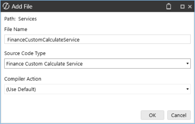
Figure 10.30
The finance custom calculate code used in this Assembly was already written in a finance business rule from the Business Rules page, so all we did here was copy the functions from the business rule and paste them into the Assembly’s Public Sub.
Our custom calculate file has two functions: SaveDecisionPackage and GetValues. The SaveDecisionPackage function will be called from a button, and the GetValues function will be called from a combo box.
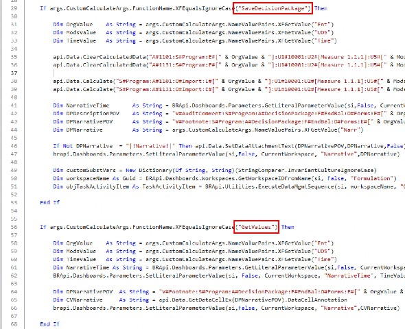
Figure 10.31
Repeat the step to add a new file under the Services folder and type ComponentService into the File Name. Click the Source Code Type drop-down menu and select Component Service. Click OK.
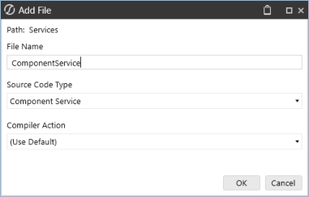
Figure 10.32
The next file we’ll use in our solution was formerly a dashboard extender business rule, which we converted into a Component Service that is called from the Service Factory.
We’ll configure a dashboard button to run this component service, allowing users to quickly and easily send a report book via email to recipients using security groups. This is just an example of a component service being called from the Service Factory, with the purpose of demonstrating how Assemblies can do just as much, if not more, than currently with traditional business rules.
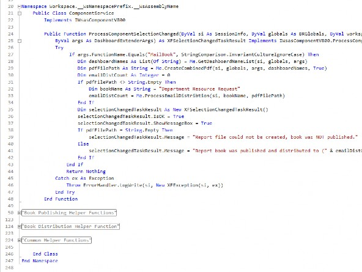
Figure 10.33
Once you’ve created your service files, the result will look something like this.
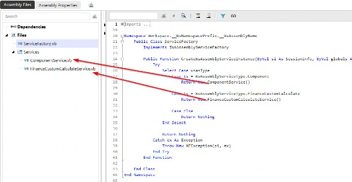
Figure 10.34
End-to-End Workspace Exercise › Workspace Overview › Solution #1 – Decision Packages
Create Components
End-to-End Workspace Exercise › Workspace Overview › Solution #1 – Decision Packages › Create Components
Objective Review
In Chapter 4, we showed examples of existing OneStream dashboard components, ideas, and tips for when you would use each of them, and how they generally display when processed on a dashboard. The intention of showing the displayed components was to familiarize you with what’s available to use in your solutions and to get you thinking about how you would use them in your dashboard solutions.
The figure below shows the components that are used to build the Decision Packages dashboard. In the following section, we’ll go under the covers to explain how to create these components to update your dashboard, process code from the Assembly file, and hopefully give you inspiration to enhance your own dashboards.
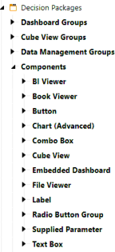
Figure 10.35
End-to-End Workspace Exercise › Workspace Overview › Solution #1 – Decision Packages › Create Components
Exercise
For this exercise, we’ll show how to build components that interact with the user to process code, update dashboards using parameters for filtering, and which components call the Assembly logic, with examples of how to maintain them.
We’ll focus on the components that users will interact with, including the following:
Cube View – Enter data into a Cube View form.
Button – Save work, calculate data, and send report books via email.
Combo Box – Change the dashboard data with a combo box which also retrieves Text Box Annotation for the selected member.
Radio Button Group – Toggle time selection to plan out years.
End-to-End Workspace Exercise › Workspace Overview › Solution #1 – Decision Packages › Create Components › Exercise
Cube View
This form, displayed on the dashboard, is a Cube View component used to collect information, specifically financial data that will contribute to the new funding being requested. In this solution, users enter FTEs and dollar amounts for the specific spending accounts being requested. The Personnel expense is calculated in the Assembly using the FTE input number multiplied by the Avg Rate stored by a manager and displayed on the employee type Cube View row.
Cells with a light blue background indicate writeable cells; all other cells are calculated or aggregated. Cube Views used as forms can be designed with different colors indicating writable vs non-writable cells within the Cube View’s cell format configuration.
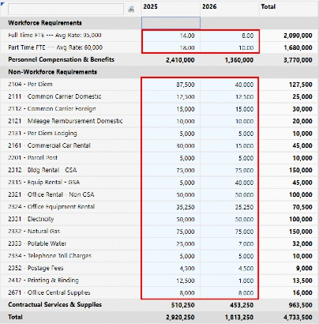
Figure 10.36
From the Cube View configuration POV, the parameters are highlighted below; this is how parameters are passed into the form using a radio button group and combo box components to update the form on the dashboard, using the same form for a number of intersections.
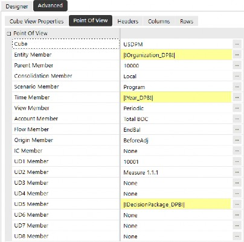
Figure 10.37
To create this component, select Components under the Decision Packages maintenance unit and click Create Dashboard Component.
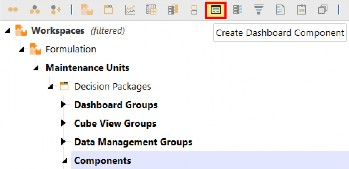
Figure 10.38
Select Cube View from the Create Dashboard Component dialog box, then click OK.
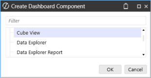
Figure 10.39
End-to-End Workspace Exercise › Workspace Overview › Solution #1 – Decision Packages › Create Components › Exercise
Button
After a user enters data into the Cube View form, they’ll click the Save Package button on the dashboard. For the user, this is just a Save button, but behind the scenes, the button is checking the maintenance unit’s Workspace Assembly Service property for the appropriate Assembly name.
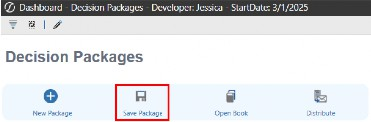
Figure 10.40
To create this component, select Components under the Decision Packages maintenance unit and click Create Dashboard Component.
Select Button from the Create Dashboard Component dialog box, then click OK.
Figure 10.41
The button properties are configured to Save Data for All Components and process the server task shown in the figure below. Assemblies can be called from the Workspace or the maintenance unit, which is indicated in the server task argument.
When Assembly is called from a Workspace:
Workspace.Current.Decision Packages.WSWhen Assembly is called from a maintenance unit:
Workspace.Current.Decision Packages.WSMU
Since we’ve wired the Assembly to the maintenance unit, we would use the WSMU suffix.
Server Changed Server Task: Execute custom calculate business rule
Server Changed Server Task Argument: {Workspace.Current.Decision Packages.WSMU}{SaveDecisionPackage}{Narr=[|!Narrative!|],Time=|!Yea r_DPB!|,Ent=|!Organization_DPB!|,UD5=|!DecisionPackage_DPB!|}
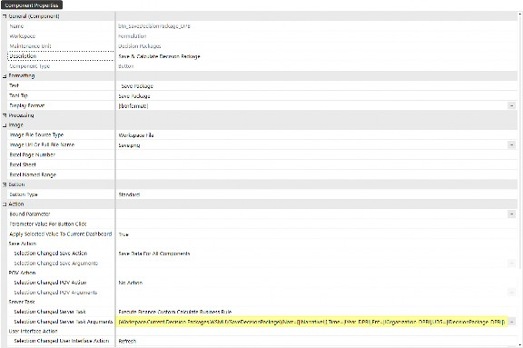
Figure 10.42
Below is the lineage of the Assembly logic being called from the button when clicked. With the Service Factory configured with the associate service files, developers don’t need to hunt and peck for the right business rule and function; they can rely on the Workspace Assembly Service Factory to route the code as intended, simply by aligning their Assembly files.
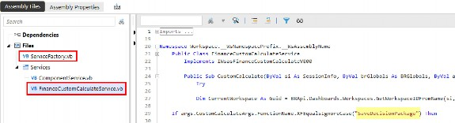
Figure 10.43
End-to-End Workspace Exercise › Workspace Overview › Solution #1 – Decision Packages › Create Components › Exercise
Combo box
Users can change member selections using a combo box, which refreshes the dashboard with the selected member; they just see the data update on the dashboard while – behind the scenes – this action is processing code routed from the Assembly.
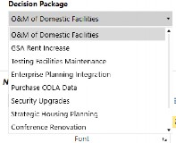
Figure 10.44
To create this component, select Components under the Decision Packages maintenance unit and click Create Dashboard Component. Select Combo Box from the Create Dashboard Component dialog box, then click OK.
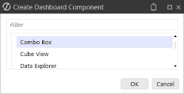
Figure 10.45
The combo box component triggers the GetValues function from our Assembly, using the following server task component configuration.
Server Changed Server Task: Execute custom calculate business rule
Server Changed Server Task Argument:{Workspace.Current.Decision Packages.WSMU}{GetValues}{Narr=[|!Narrative!|],Time=|!Year_DPB!|,En t=|!Organization_DPB!|,UD5=|!DecisionPackage_DPB!|}
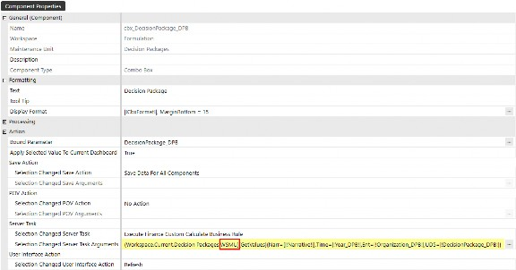
Figure 10.46
End-to-End Workspace Exercise › Workspace Overview › Solution #1 – Decision Packages › Create Components › Exercise
Radio Button Group
To give the user some variety, we’ve created a radio button group component to toggle the year in which we are entering data. The component defaults the year to 2025, which is the |WFYear| as set on the default property of the Year_DPB parameter.
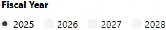
Figure 10.47
To create this component, select Components under the Decision Packages maintenance unit and click Create Dashboard Component.
Select Radio Button Group from the Create Dashboard Component dialog box, then click OK.
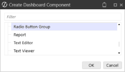
Figure 10.48
The figure below shows the Year_DPB parameter that’s been passed into our component. The Default Value is optional, though we’ve set it as |WFYear| to display the user’s workflow year when the dashboard is initialized.
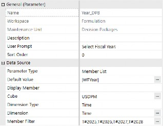
Figure 10.49
The component configuration is displayed below. The Year_DPB parameter has been inserted into the Bound Parameter property, effectively controlling the members (year) displayed from the component when the dashboard is processed.
We’ve configured this component to process the GetValues function from our Workspace Assembly.
Server Changed Server Task: Execute custom calculate business rule
Server Changed Server Task Argument:{Workspace.Current.Decision Packages.WSMU}{GetValues}{Narr=[|!Narrative!|],Time=|!Year_DPB!|,En t=|!Organization_DPB!|,UD5=|!DecisionPackage_DPB!|}
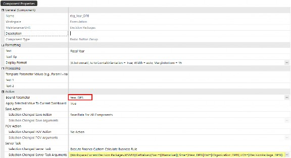
Figure 10.50
The radio button group and combo box components essentially have the same functionality; they both trigger the SaveDecisionPackage function from the Assembly – just using different components to show options (consider this when designing and building your dashboard solutions).
End-to-End Workspace Exercise › Workspace Overview
Solution #2 – Fiscal Guidance
The second solution that we will build completely within our Formulation Workspace is called Fiscal Guidance. This dashboard is much simpler, with fewer components than our first solution, but the components we are using on this dashboard are just as powerful. This is like seeding a long-range plan with prior year balances rolled forward, and then multiplying them by percentages the user enters.
Below is the final product we are aiming for. In this exercise, we’ll see how to build some of the components of this dashboard.
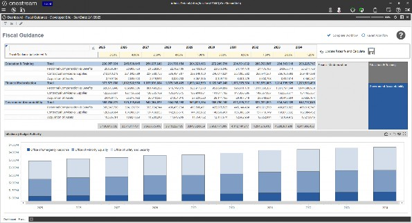
Figure 10.51
End-to-End Workspace Exercise › Workspace Overview › Solution #2 – Fiscal Guidance
Create Maintenance Unit
End-to-End Workspace Exercise › Workspace Overview › Solution #2 – Fiscal Guidance › Create Maintenance Unit
Objective Review
The first maintenance unit we’ll create is used to calculate Fiscal Guidance. Our developer, Eric, will be building the solution. This dashboard’s purpose is to calculate the impact of inflation % year-over-year for a 10-year forecast.
End-to-End Workspace Exercise › Workspace Overview › Solution #2 – Fiscal Guidance › Create Maintenance Unit
Exercise
Click on Maintenance Units under the Formulation Workspace and click the Create Maintenance Unit button.
Figure 10.52
In the name field of the Maintenance Unit, type in Fiscal Guidance. The description field is optional for adding more context as desired; for now, we will leave this blank.
We will leverage Assemblies to trigger custom calculate actions for this dashboard. However, to show the difference between calling syntax from a Workspace vs. a Workspace Maintenance Unit, we will call the Assembly rule file from the Formulation Workspace, where we assigned the Workspace Assembly Service named Formulation.ServiceFactory.
Select the Access Group and Maintenance Group security groups to which you want to give these rights. For this exercise, we will select the DevelopmentQA security group as the Access Group on both maintenance units, allowing both developers to access/view both solutions. In contrast, the maintenance unit’s Maintenance Group will differ – essentially restricting each developer from accidentally modifying one another’s dashboards. Eric belongs to both the DevelopmentQA and DeveloperGroup1 security groups, so these are the security groups we’ll assign to the maintenance unit.
You can modify these properties later if you don’t have security groups configured yet. Click the Save button to create the new maintenance unit.
Figure 10.53
End-to-End Workspace Exercise › Workspace Overview › Solution #2 – Fiscal Guidance
Create Cube Views
End-to-End Workspace Exercise › Workspace Overview › Solution #2 – Fiscal Guidance › Create Cube Views
Objective Review
The fiscal guidance dashboard will contain two Cube Views. The first will be used for data entry, where users will enter and/or adjust inflation % to adjust the future year’s budget authority. The second Cube View will show users the inflation % impact on accounts and programs. We will also use this Cube View for a BI Viewer component to visualize the data, allowing users to quickly see the impact of inflation % changes.
End-to-End Workspace Exercise › Workspace Overview › Solution #2 – Fiscal Guidance › Create Cube Views
Exercise
Click on Cube View Groups under the Fiscal Guidance maintenance unit and click the
Create Group button.
Figure 10.54
Type Fiscal Guidance into the Name field; the Description is optional.
Figure 10.55
Click on the Fiscal Guidance Cube View group and click the Create Cube View button.
We’ve created the two Cube Views required for this dashboard (shown in the figure below). The Cube View named cv_FiscalGuidanceRates_FGR will be used to display the data entry form for users to enter the inflation %, while the Cube View named cv_FiscalGuidance_FGR will display the results of the calculated impact.
Figure 10.56
End-to-End Workspace Exercise › Workspace Overview › Solution #2 – Fiscal Guidance
Create Data Management Groups
End-to-End Workspace Exercise › Workspace Overview › Solution #2 – Fiscal Guidance › Create Data Management Groups
Objective Review
Our dashboard will include a button that will process code that triggers a custom calculate function from the Workspace Assembly’s Service Factory upon user click. To configure our button to call the Assembly, we need a data management sequence that calculates the forecasted years.
Data management groups consist of Sequences and Steps. Data management steps are the vehicle for processing various functions, including calculations, consolidations, executing business rules, and processing custom calculation logic. Conversely, data management sequences are the vehicles that dashboard components use to trigger actions. In a nutshell, steps are the actions that are added to sequences – sequences can consist of as many steps as needed.
Our next task is creating the data management objects to facilitate the Assembly rule from a button, which will require us to create the following data management objects:
Groups: Where we create and organize data management objects.
Step: Where we call the custom calculation script from our Assembly.
Sequence: How we apply the action to a button.
End-to-End Workspace Exercise › Workspace Overview › Solution #2 – Fiscal Guidance › Create Data Management Groups
Exercise
Click on Data Management Groups and then click the Create Group button.
Figure 10.57
Type Button Actions into the Name, then click Save. The Description field is optional for adding more context to the group’s purpose; for this exercise, we will leave this blank.
Figure 10.58 Click on Steps and then click the Create Step button.
Figure 10.59
Select Custom Calculate from the Create Step dialog box, then click OK.
Figure 10.60
End-to-End Workspace Exercise › Workspace Overview › Solution #2 – Fiscal Guidance
Custom Calculate Data Management Step Properties Explained
Here’s a breakdown of the syntax used in the four-part Assembly logic:
Method: Workspace
Workspace Name: Workspace Name where the Assembly is located. Alternatively, you can enter Current if the Assembly is in the same Workspace as the data management step being processed.
Maintenance Unit: Name of the maintenance unit where the Assembly is located.
Service Factory Location: WS if the Service Factory is configured on the Workspace; WSMU if the Service Factory is configured on the Workspace’s maintenance unit.
Name: Enter the name of the step that is being processed
Description: Optional field for adding more context or explanation of the step
Data Units: Target intersections where you are writing data and calculations
Business Rule: Enter the business rule or Workspace Assembly name, and type in the function name that contains the code your step will process
Since we are using Workspace Assemblies to build our processing code, the business rule field must contain a valid Workspace format: Workspace.Current.Fiscal Guidance.WS
Figure 10.61
Next, we need to create the sequence that we will add the step to and eventually use to configure our dashboard button. Click on Sequences and then click the Create Sequence button.
Figure 10.62
Type in a name for the sequence; you can also enter a description, which is optional. We named our sequence Seed Fiscal Guidance; this name will be used to configure our button action.
Figure 10.63
Select the Sequence Steps tab and click the ➕ button to add the Seed Guidance Year 1 to 10 step to the sequence. Click Save to create the sequence.
Figure 10.64
End-to-End Workspace Exercise › Workspace Overview › Solution #2 – Fiscal Guidance
Create Assembly
End-to-End Workspace Exercise › Workspace Overview › Solution #2 – Fiscal Guidance › Create Assembly
Objective Review
Assemblies, in their simplest form, are another method for triggering actions. Previously, syntax was called from the business rules page. With OneStream’s Workspaces, though, you now have the ability to use Assemblies where business rules were called – making it much easier and quicker to share/export full dashboard solutions with syntax from the Assemblies packaged.
End-to-End Workspace Exercise › Workspace Overview › Solution #2 – Fiscal Guidance › Create Assembly
Exercise
Click on Assemblies and click the Create Assembly button.
Figure 10.65
Type Formulation into the Name field, and type Formulation Rules in the Description (optional). When creating new Assemblies, the default compiler language is C#. Change the drop-down selection to Visual Basic, and then click Save.
Figure 10.66
Navigate to the Assembly Files tab and right-click on Files, then click Add File.
Figure 10.67
Type ServiceFactory into the Name, then select Service Factory from the Source Code Type drop-down menu, then click OK.
Figure 10.68
The Source Code Type selection will determine the sample syntax provided when creating new files. When you add a new Assembly file with the Service Factory Source Code Type selected,
OneStream automatically populates the file with placeholders for each standard Service Factory Workspace Assembly type.
Although each Assembly type is listed in the initial Service Factory file, the Assembly will not process any syntax until you make the syntax active. In other words, there is no harm in leaving the Assembly types ‘as-is’ in the Service Factory, since they will not be processed or triggered unless you enable them.
For advanced developers reading this, you are likely to understand the concept of uncommenting and commenting out syntax to make lines in your file active or not.
For those new to development and writing code, or if you are just getting acquainted with developing in different languages, OneStream’s flexible framework provides the ability to write code in Visual Basic, C#, or a combination of the two coding languages. The beauty of this is that you are not forced to write your code in a single language, especially if you’re comfortable with one language and not the other. Personally, I find Visual Basic easier for writing code, and more importantly, easier to read. However, most true developers I’ve worked with prefer C#.
The concept of turning lines of code on/off within your Assembly is straightforward; the character used to enable code lines is determined by the language you’re writing your code in.
C#
Comment-out code: Use double backslash ( // ) before the row to make inactive.
Visual Basic
Comment-out code: Use an apostrophe ( ‘ ) before the row to make inactive.
The following section’s screenshots highlight the difference between turning lines of code on/off in Visual Basic vs C#.
Figure 10.69
In both languages, code that has been commented-out (made inactive) will display as green text.
With the basic knowledge of what code in your Assemblies will and will not be processed, we can easily identify lines of code within the Service Factory Assembly file that we want to make active.
For this solution exercise, we need to create a custom calculate rule to process calculations upon saving data entry in our dashboard’s forms. The Service Factory’s library is shown below for reference, but for simplicity, we will focus on the Custom Calculate type to explain how the Service Factory can dynamically call the appropriate code based on the Workspace’s configuration.
Scroll down to where the Finance Custom Calculate case syntax is located:
Case Is = WsAssemblyServiceType.FinanceCustomCalculate
Immediately below this line of code, uncomment (remove the ’ before) the line of code:
Return New WsasFinanceCustomCalculate()
This is what the code should look like once you’ve modified the row to enable the script to be processed.
Figure 10.70
Now that we’ve made the line of code active, we need to create the file that the Service Factory points to in order to process the appropriate function; otherwise, nothing will happen when the Service Factory is called.
In an effort to keep our Assemblies organized and easy to navigate to specific sections of the code, we can create folders within the Assembly that group or structure the Assembly in a way that users will find more intuitive (in order to find specific code to modify or build upon).
Folders are purely for organization; feel free to name them whatever makes most sense to you in your development. I like to name folders in a way that groups types of rules to make troubleshooting and modifying code more intuitive.
For example, below is a sample Assembly organized by 11_Services and 2_Process. The 11_Services folder contains code that is processed from the Service Factory, and the 2_Process folder contains code that is processed from specific service files. When creating folders, you only need to enter the Folder Name. The Folder Path field is not editable, rather it populates the lineage once you save the new folder, as shown in the next figure.
Figure 10.71
Organizing and naming Assembly files is ultimately up to you. The most important thing to remember when naming files is that the service file names must match the Service Factory Return statements.
Click on Files, right-click, and select Add Folder.
Figure 10.72 Type Services into the Folder Name, then click Save.
Figure 10.73
Right-click on the Services folder and select Add File.
Figure 10.74
In order to call the Case statement from the Service Factory, the name of the service must match the name of the Case statement referenced in the ServiceFactory Assembly.
Type WsAssemblyServiceType into the File Name (as reflected in row 52 of the ServiceFactory rule), then select Finance Custom Calculate Service from the Source Code Type drop-down menu. Click OK.
Figure 10.75
The source code type selected in the previous step provides the shell of the pre-defined rule type. Depending on the source code type selected for the file, you will see different syntax templates.
Row 21 of the syntax in the figure below shows the name of the file created and referenced in the ServiceFactory file named WsasFinanceCustomCalculate.
Directly below the Try syntax on row 25 is where you will start writing your own syntax. For this exercise, we’ve written custom calculation logic into the Assembly to calculate the impact of inflation.
To systematically call this syntax from a dashboard’s button component, we will also need to create a data management sequence in the following steps that processes the function called Guidance, as shown in row 26 of the figure below.
Figure 10.76
End-to-End Workspace Exercise › Workspace Overview › Solution #2 – Fiscal Guidance
Create Components
End-to-End Workspace Exercise › Workspace Overview › Solution #2 – Fiscal Guidance › Create Components
Objective Review
The figure below shows the components that are used to build the Fiscal Guidance dashboard. In the following exercise section, we’ll go under the covers to explain how to create these components to update your dashboard and process code from the Assembly file.
Figure 10.77
End-to-End Workspace Exercise › Workspace Overview › Solution #2 – Fiscal Guidance › Create Components
Exercise
For this exercise, we’ll focus on the primary components that require user interaction.
Cube View: Enter data into a Cube View form
Button: Save work, process custom calculation logic
End-to-End Workspace Exercise › Workspace Overview › Solution #2 – Fiscal Guidance › Create Components › Exercise
Cube View
This form, displayed on the dashboard, is a Cube View component used to collect Fiscal Guidance Adjustment %, implying inflation predictions’ impact on future years’ fund values.
Cells with a yellow cornsilk background indicate that they are writeable; users can enter or update these.
Figure 10.78
To create this component, select Components under the Decision Packages maintenance unit and click Create Dashboard Component.
Select Cube View from the Create Dashboard Component dialog box, then click OK.
Figure 10.79
End-to-End Workspace Exercise › Workspace Overview › Solution #2 – Fiscal Guidance › Create Components › Exercise
Button
After a user enters or modifies the percentage input form, they’ll click the Update Rates % and Calculate button on the dashboard.
Figure 10.80
To create this component, select Components under the Fiscal Guidance maintenance unit and click Create Dashboard Component.
Select Button from the Create Dashboard Component dialog box, then click OK.
Figure 10.81
The button properties are configured to Save Data for All Components and process the server task shown in the figure below. In the Decision Packages solution, we showed how to build a button to execute a custom calculate business rule from the server task options. For this solution, we’ll show how to call a data management sequence to process Assembly logic with a custom calculate step.
Server Changed Server Task: Execute Data Management Sequence
Server Changed Server Task Argument: {Seed Fiscal Guidance}{}
Figure 10.82
In the Create Data Management Groups section above, we created a step that called an Assembly function using the Service Factory. That sequence, named Seed Fiscal Guidance, contains a step named Seed Guidance Year 1 to 10.
Notice the business rule in the data management step is configured with Workspace.Current.Fiscal Guidance.WS. The syntax here is WS instead of WSMU, since the Assembly is wired to the Workspace itself.
Figure 10.83
Navigate back to the Formulation Workspace and notice where we originally configured the Assembly name and location.
Figure 10.84
End-to-End Workspace Exercise › Workspace Overview
Porting Solutions
Thanks to Workspaces and Workspace Assemblies, exporting solutions has never been easier in OneStream. Let’s look at the steps required to export our solution before Workspaces provided a central location to build and extend our solutions.
Before Workspaces
Exporting files from OneStream has always been an easy task, but for developers building robust solutions that need to be exported for sharing or testing, the task of capturing all necessary files can be daunting – and prone to error if you forget to export even one file that the solution requires.
To export files, navigate to the Application tab and select Load/Extract under the Tools section.
10.85
Before Workspaces existed, you had to export multiple file types and hope you didn’t miss any files for the solution to function (when importing to another application or sharing the solution with others).
It was a multi-step process to get each file. The Decision Package solution, for example, required repeating the export step to get the following files out of the application.
Export Cube Views
Export Data Management
Export Business Rules
Export Dashboards
Figure 10.86
After Workspaces
When solutions are developed completely within the Workspace, this task requires only one step.
1. Export Workspaces
To export a Workspace, select the Application Workspaces file type from the drop-down menu. Unselect the top item and click the specific Workspace you want to export. Much easier!
Figure 10.87
End-to-End Workspace Exercise
Conclusion
This end-to-end exercise clearly demonstrates how OneStream Workspaces empower users across all roles… developers, administrators, and business users alike. By consolidating development, configuration, and deployment into a single, intuitive interface, Workspaces streamline the entire solution lifecycle. Developers benefit from modular design through maintenance units and Assemblies, enabling secure, collaborative development without code conflicts. Administrators gain efficiency through simplified packaging and deployment, reducing the risk of missing components during exports. Business users experience more responsive, interactive dashboards that are easier to navigate and tailored to their needs.
Ultimately, Workspaces foster a more agile, secure, and scalable environment for building and managing enterprise solutions. Whether you’re creating complex financial models or simple data entry forms, Workspaces provide the structure and flexibility to deliver high-quality solutions faster and with greater confidence!